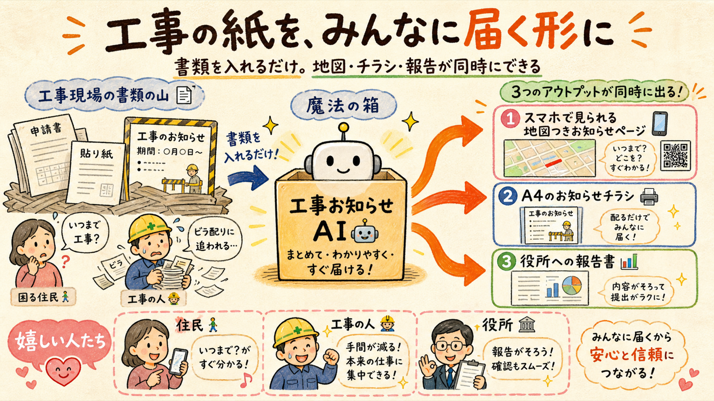
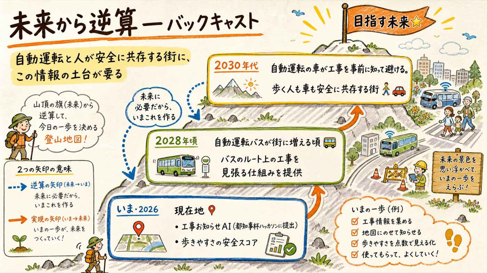
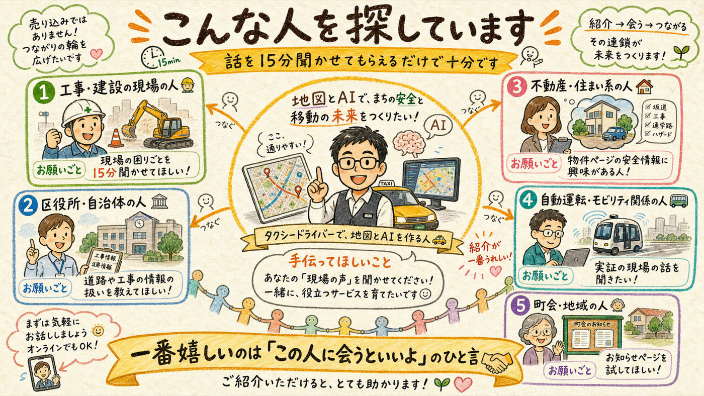

東京でタクシーを運転しながら、地図とAIのサービスを個人で作っています。毎日路上を走っていると、突然始まる工事に困る歩行者・ドライバー・そして工事の人たち自身をたくさん見ます。その「困った」を小さく解決するところから始めて、大きな未来につなげようとしています。

「工事お知らせAI」— 工事のいつもの書類をAIが読み取り、住民がスマホで見られる地図つきお知らせページ・貼り紙・報告書を自動で作るサービスです。東京都のオープンデータ（都内の路上工事765件）も取り込んで、すでに本番で動いています。今年の都知事杯オープンデータ・ハッカソン2026に提出します。
実物: osanpo-safety.haqei64384.workers.dev ／ 住民向けページの例: 工事のお知らせ（デモ）

自動運転の車は、カメラで工事を「見つけて止まる」ことはできても、事前に知って避けることがまだできません（米国では大手の自動運転車が工事現場に入り込んでリコールになったばかりです）。歩く人と自動運転が安全に共存する街には、「今日どこで道路が変わったか」を人にも機械にも届ける情報の土台が必要になります。私はタクシードライバーとして毎日その現場を見ている当事者として、この土台を東京から作りたい。工事お知らせAIはその第一歩です。

| こんな方 | お願いしたいこと |
|---|---|
| 👷 工事・建設の現場にいる方（監督さん・職人さん・警備の方） | 住民へのお知らせや問い合わせ対応の実際を15分聞かせてください |
| 🏛️ 区役所・都庁・自治体で働く方 | 道路や工事の情報がどう扱われているか教えてください |
| 🏠 不動産・住まい系の仕事の方 | 「歩きやすさ・道路の安全」の情報に興味があれば話をさせてください |
| 🚌 自動運転・交通・モビリティ関係の方 | 実証の現場で困っていることを聞かせてください |
| 👵 町会・地域活動をされている方 | 工事のお知らせページを試しに使ってみてください（無料です） |
一番嬉しいのは「この人に会うといいよ」のひと言です。🤝
紹介していただいた方に売り込みはしません。まず話を聞くところからやっています。
東京・大田区在住。現役のタクシードライバーで、AIを使った開発を一人でやっています。「地図が好きで、PDFやExcelに埋もれた地域の情報を、AIと公共データで使えるWeb地図に変える」のが得意分野です。工事情報のほかにも、地域のイベント案内や施設情報の地図化などもやっています — 「うちにもこういう埋もれた資料がある」があれば、それもぜひ見せてください。